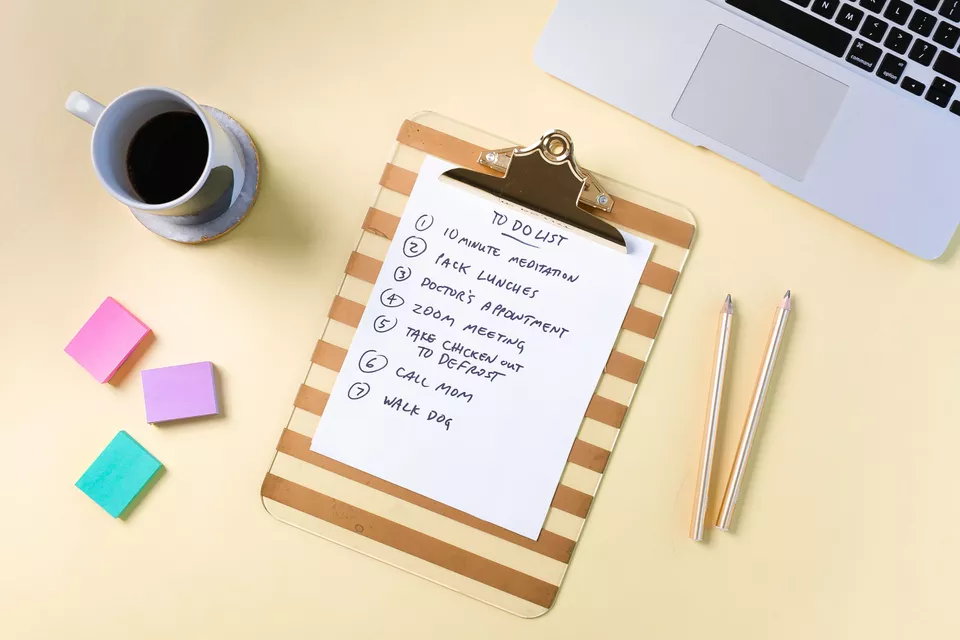
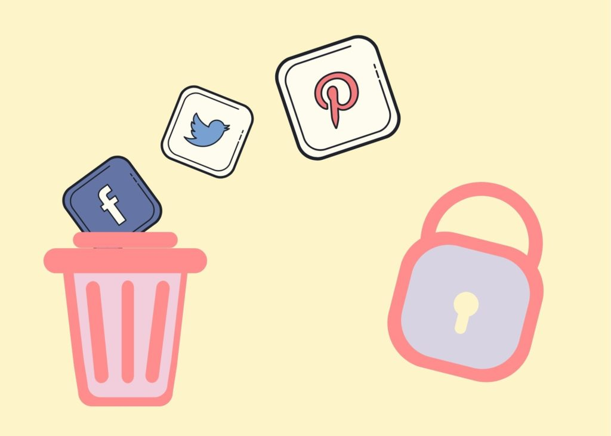
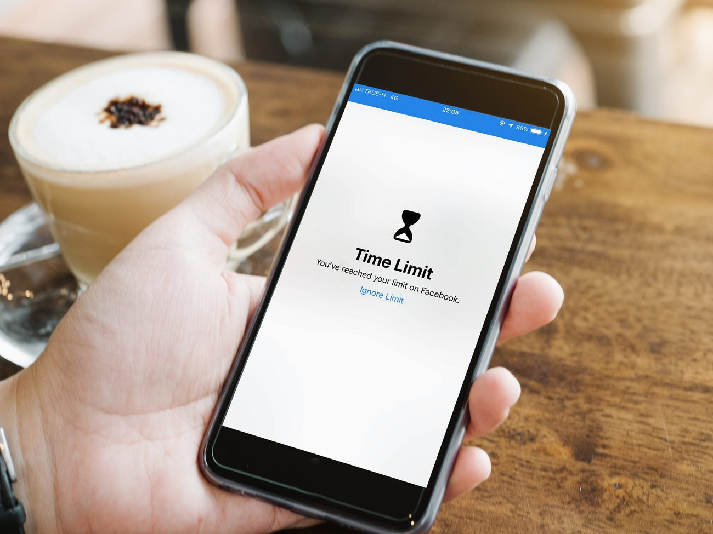

Have a routine
Humans are naturally hard-wired to crave stability and dependability. Our brains and our bodies perform better if we can follow a regular schedule. At first, it may feel fun or relaxing to have a lot of free time that you can use however you want – especially if you have a job you can no longer go to and other responsibilities that have shifted.
However, the decisions you make about how to spend your time cause stress. Do I go to the market or wait another day? What time should I wake up the kids? Should I look for jobs online, or should I watch TV? When should I start cooking dinner?
Without a routine, during a single day, you could be making hundreds of decisions, and the stress and anxiety will add up. Building a routine can take this pressure off and sticking to a routine can help boost your self-confidence.
----AltaMed ' Why Having a Routine During Quarantine is So Important'
Reduce social media use
A 2018 University of Pennsylvania study found that reducing social media use to 30 minutes a day resulted in a significant reduction in levels of anxiety, depression, loneliness, sleep problems, and FOMO. But you don’t need to cut back on your social media use that drastically to improve your mental health. The same study concluded that just being more mindful of your social media use can have beneficial results on your mood and focus.
----Social Media and Mental Health
Keep social contact
Healthy Living Program Manager Zaneta Evans says, “We don’t have the physical connection right now, so thinking outside the box is important. Let’s pick up the phone and have a conversation. Video calling helps us see our loved ones’ faces. Be creative with how you engage with people and interact with others, even in your own home. We can write letters, we can reach back to before technology was an option and find ways to be with each other, without closing that physical distance.”
----Social Connection During COVID-19
Decrease screen time
Research suggests there may be an increased risk for developmental delays in language acquisition and communication skills in young children who spend significant time in front of screens (i.e., 2-3 hours per day).
Research suggests that increased screen time may be related to a decrease in both sleep quality and sleep duration.
----How Does Screen Time Affect Mental Health?
Limit alcohol and drug use
People use drugs and drink alcohol for lots of different reasons. Whatever your reason, using drugs or alcohol may have a long-term negative effect on you. The possible long-term effects include the following.
· Feeling like you must use the drug or alcohol. This is known as being dependent.
· Having sudden mood changes.
· Having a negative outlook on life.
· Loss of motivation.
· Depression.
· Anxiety.
· Problems with relationships.
· Being secretive.
· Prioritize Mental Health Surveillance And Research
· Invest in public health media campaigns
· Rapidly Expand Mental Health Screening
· Target Key Interventions
· Increase Capacity
----Five Urgent Public Health Policies To Combat The Mental Health Effects Of COVID-19